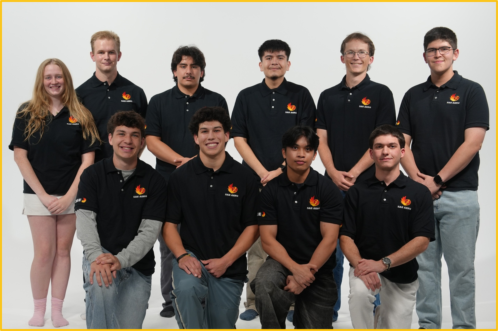
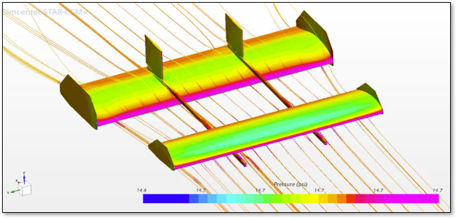
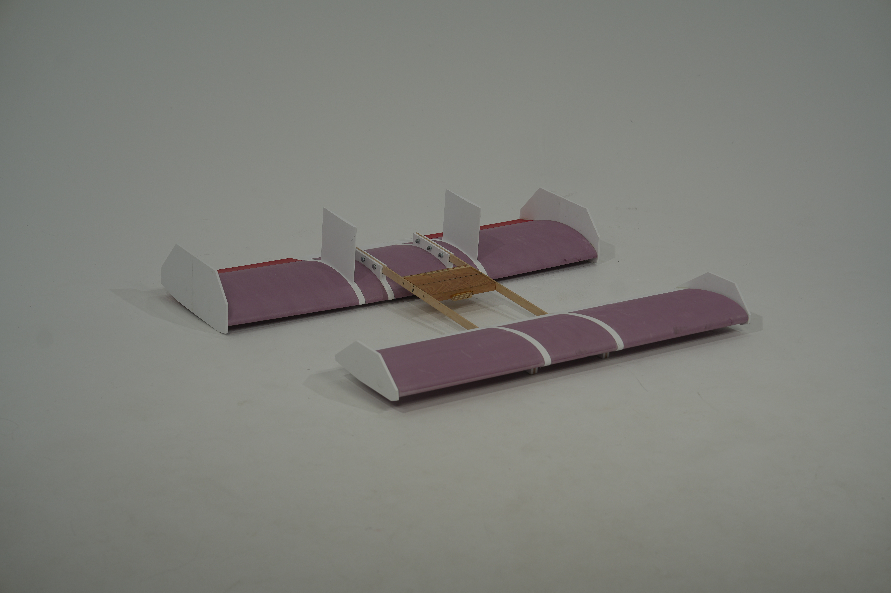
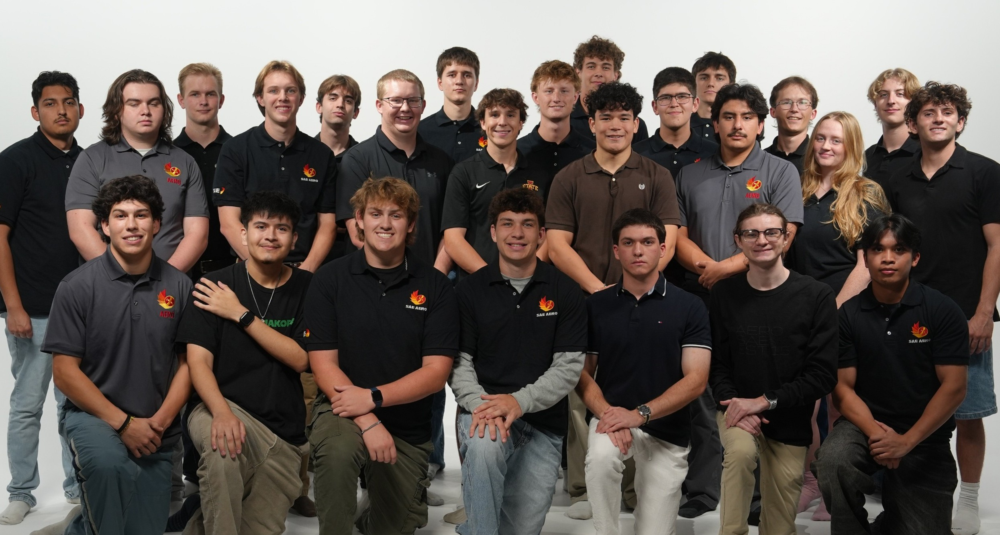
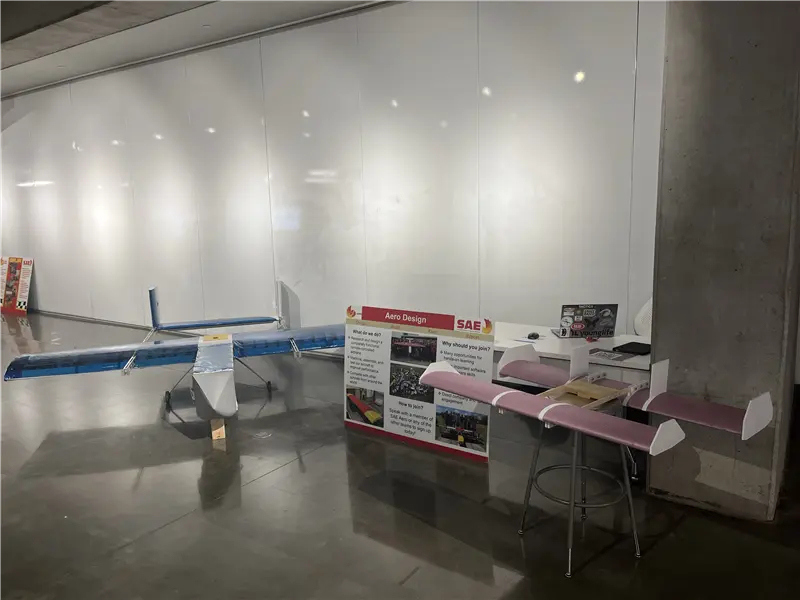

PROJECT DIRECTOR / IOWA STATE UNIVERSITY
Aero SAE.
Full Aerospace
Design Cycle.
I lead team management for Aero SAE’s 2026–2027 program. Our Regular Class aircraft, Lazarus, uses a tandem-wing configuration for an all-electric cargo mission.
Explore the team & project photos
LEADERSHIP & PROGRAM DEVELOPMENT
Growing the team. Building the structure.
My role is team management, working alongside the Technical Director and subteam leads. The aircraft analysis and design shown here are collaborative team work.
Team growth, new subteams & management tools
More people. More ways to contribute.
Under my leadership, team involvement has tripled, with general meetings averaging more than 85 people. The Aerodynamics subteam alone now has more active members than our entire team last year, and its meetings consistently draw more people than last year’s largest team meeting.
We introduced manufacturing, electrical, and programming subteams, alongside a new Micro Class program. Of 35 new positions, 33 are filled, with only two marketing roles still open. This expanded structure gives members clear ownership across both competition classes.
A repeatable management framework
Management work includes Gantt schedules, completion tracking, automated attendance sheets, a budget tracker, and a leadership flowchart. The aim is to make responsibilities and dependencies visible and leave tools future teams can reuse.
2× team spending · 3× sponsorship involvement compared with last season.
Industry engagement & sponsorship
INDUSTRY ENGAGEMENT & PROGRAM SUPPORT
Building the support behind the aircraft.
As the program has grown, team spending has doubled and sponsorship involvement has tripled compared with last season. Alongside the marketing team, I help connect this growth with industry outreach, student recruitment, and the resources needed to build our aircraft.
Our industry engagement includes meetings with ispace, the lunar transportation company, Boeing, Collins, and ISGC. Input from Amazon Kuiper employees has also helped inform the team’s work.
Partnership opportunities include design reviews, technical discussions, workshops, and contributions of materials, manufacturing, software, and equipment.
The 2026–2027 sponsorship plan identifies a $25,000 season funding need across travel, fabrication, aircraft systems, analysis, and outreach. This is the program’s stated need, not an amount raised.
Program plan: from design freeze to first flight
The first-flight plan defines task owners, dependencies, completion criteria, and recovery dates. Workstream ownership and the meeting/reporting cadence are marked complete; the remaining milestones below are planned targets.
- OCT 6, 2026
Freeze interfaces
Coordinate cross-team interfaces and release long-lead manufacturing work.
- NOV 8–10, 2026
Build and integrate
Target major manufacturing completion, followed by aircraft assembly and integration.
- NOV 18–20, 2026
Review readiness
Plan ground-test completion, close flight-critical discrepancies, and make the flight-readiness decision.
- NOV 21–22, 2026
Target first flight
The plan reserves November 24–25 for recovery, with December 3 as the fallback. These dates are targets, not completed flights.
Aircraft design and analysis
The preliminary design review compares lifting-body, canard, and tandem-wing configurations. The team selected the tandem wing for its lift, payload capacity, and manufacturability, while recognizing its aerodynamic complexity and efficiency tradeoffs.

Analysis before flight
The team combines STAR-CCM+ CFD, XFLR5, and hand calculations, with wind-tunnel validation in the development plan. Structural work includes subassembly FEA and manufacturability reviews. The programming team is developing a MATLAB Simulink plant model for software- and hardware-in-the-loop simulation, while electronics work includes propulsion trade studies and wiring integration.
The design figures in these materials describe analysis and evolving configurations; they are not flight-test results.
Sources & program documentation
Growth, attendance, staffing, spending, and engagement figures reflect my current 2026–2027 update. Earlier program documentation: Aero SAE leadership chart; September 2026 update; August 5 preliminary design review; Thanksgiving first-flight plan; 2026–2027 sponsorship packet; management overview; and the linked team and sponsorship websites.
Gallery


